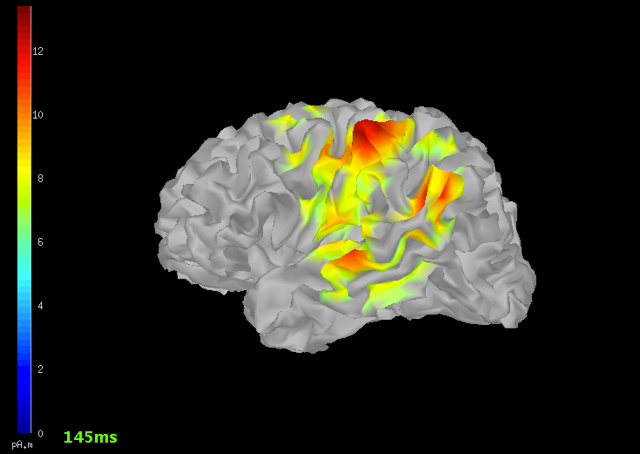
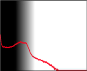
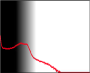
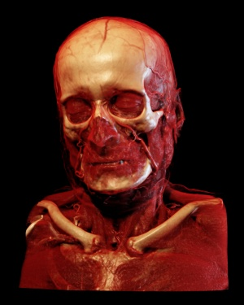
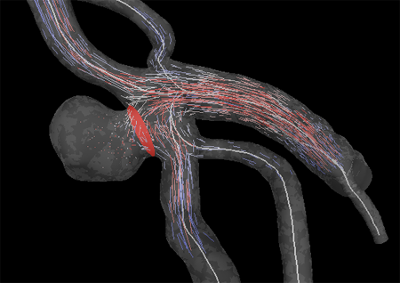
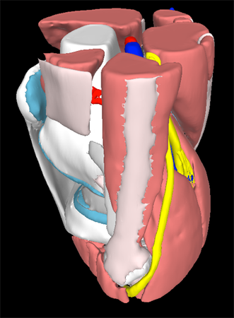
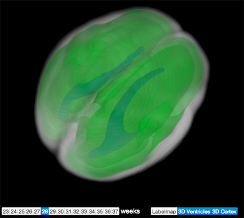
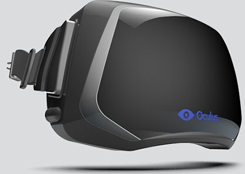

Physiology & function

Daniel Haehn
Steve pieper


Daniel haehn

- Research Software Developer
- Contributor to 3D Slicer
- WebGL Enthusiast


http://slicedrop.com
Webgl?
brain camera!


MRI Data
Typically- ~1mm resolution
- 256x256x170 vx dimensions
(for Neuroimaging) - ~20 MB
multi modality imaging


Fetal MRI

 Problem: Motion
Problem: Motion
Fetal MRI: Diagnostic
28
weeks, pathologic
28
weeks, healthy atlas *
After
Motion Correction
*
Atlas data from Imperial College
2d visualization
- Window/Level
- Corner Annotations
- Pseudo Color
- Lightbox view
 
 


2d visualization
label maps


Automatic or Manual Segmentation
3d visualization
3d visualization
volume rendering
- Ray Casting
- Summation (simulated X-Ray)
- Maximum Intensity Projection
- Shaded Surface Display

3d visualization
Surfaces

- Triangulation of 2D Label Maps
- Material properties, Lighting, Opacity
- Overlays

3d visualization
fiber tracking (DTI)

 '
'
registration
Alignment of Images

software


software
Free Downloads
- 3D Slicer (http://slicer.org)
- FreeView (http://surfer.nmr.mgh.harvard.edu)
- Osirix (http://osirix-viewer.com)
- TrackVis (http://trackvis.org)
file formats
- Volume Data
- DICOM
- .NII, .NII.GZ, .NRRD, .MGH, .MGZ
- Surface Meshes
- .VTK, .VTP, .STL, .OBJ
- SMOOTHWM, .INFLATED, .SPHERE, .PIAL ...
- Fiber Tracks
- .TRK, .STL, .VTK
demos
demos
slice:DROP

http://slicedrop.com
demos
knee atlas
http://demos.goxtk.com/knee_atlas/
demos
brain atlas
http://demos.goxtk.com/brain_atlas/
demos
Semantic Movies

http://gallantlab.org/semanticmovies/ Huth, Nishimoto, Vu and Gallant (2012), "A continuous semantic space describes the representation of thousands of object and action categories across the human brain", Neuron 2012
demos
stackdrop

http://stackdrop.org
demos
fetal mri
http://fetalmri.org
demos
3d slicer webGl export

https://github.com/xtk/SlicerWebGLExport
demos
An easy-to-use WebGL library
var r = new X.renderer3D();
r.init();
// .. load a .VTK mesh
var m = new X.mesh();
m.file = 'skull.vtk';
// add it ..
r.add(m);
// .. render it
r.render();
http://goXTK.com
future

- Virtual Reality / Augmented Reality
- Human-Computer Interaction
- GPU Computing using WebCL!
- Higher Resolution, larger Data
